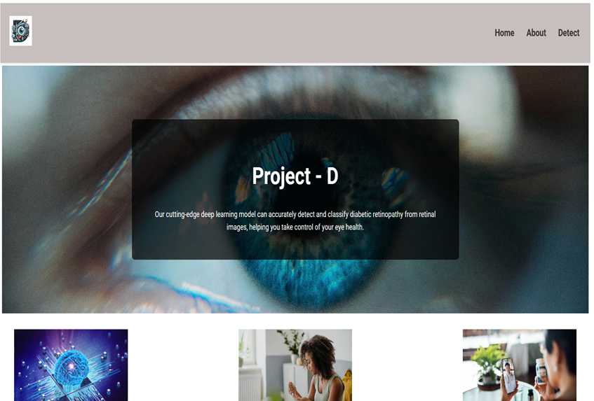
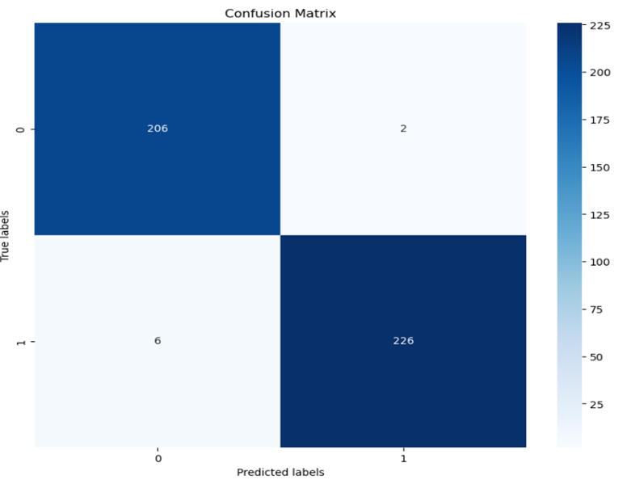
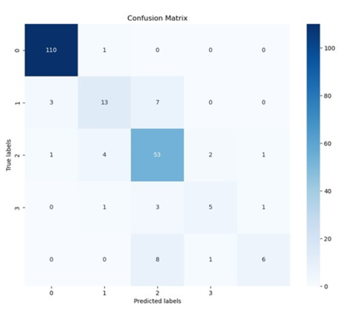

AI FOR HEALTHCARE
Diabetic Retinopathy Detection
Making Medical Insight More Accessible
A deep learning system based on EfficientNet-B0 for automated diabetic retinopathy diagnosis. The project explored how medical AI can remain both accurate and deployable, achieving strong classification performance while remaining suitable for resource-constrained healthcare environments. The work was later published and received the Best Paper Award at SCES 2024.